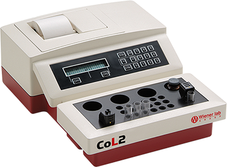

Wiener lab CoL
Coagulómetros

DESCRIPCIÓN:
Coagulómetros compactos de lectura turbidensitométrica, con función de inicio automática.
Los coagulómetros WIENER LAB COL 1, COL 2 y COL 4 operan de acuerdo con el principio de medición optomecánico. Cualquier cambio en la intensidad de la luz transmitida es convertido en una señal eléctrica.
Resultados estandarizados, ahorro de reactivo (utilizan la mitad de reactivo vs. la técnica manual).
Al agregar el reactivo la intensidad de la lámpara se ajusta automáticamente, según la turbidez de la muestra de plasma y del reactivo.
Canales de medición 1, 2 o 4 según el modelo.
CARACTERÍSTICAS:
Determinaciones: TP, APTT, Fibrinógeno, TT y Factores, para todas las determinaciones se utiliza la mitad del reactivo que del método manual.
Software/Hardware:
- Temperatura controlada a 37.4 +/- 0.4 ºC (con sistema Peltier).
- Todos los parámetros del reactivo son editables.
- Almacenaje de un máximo de 7 métodos.
- Software multilenguaje.
- Calibración/curvas de referencia editables. De hasta 9 puntos.
- Detección de la cubeta.
Modelo CoL 4 también disponible.
Registro: 2313E2011 SSA
DATOS COMPLEMENTARIOS: Para información adicional comunicarse a:
WIENER LAB.
REPRESENTACIONES LABIN MÉXICO, S. A. de C.V.
Teléfonos: (55) 5524-0771, 5200-2500
Lada sin costo: 01 800-581-4616
e-mail: contacto@wiener-mex.com
www.wiener-lab.com.ar